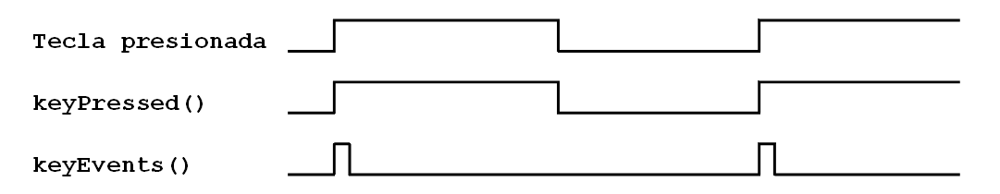

4. Pushbuttons: Events¶
Goals¶
- Read the events associated with a button.
- Respond to push button events.
Pushbutton related events¶
When reading a push button, the states of the events must be distinguished.
A state is maintained over time. An example of a state is the value pressed on a button. While the button is pressed, the status is one. When the button is not pressed, the status is zero.
An event, by contrast, is only true at the start of a new state. In the previous case, when a button is pressed, the event pressed is worth one the first time it is read. From then on, it is always zero until the button pressed condition is met again.
Events are useful when you want to perform a single action on a key press. In the following graphic you can see the difference between state and event.
{kind=link}
The keyEvents function¶
-
int
keyEvents(int keyNum)¶ This function returns the value of the events that occur in a button. The events that the function can return are the following:
Event Meaning KEY_PRESSED_TIME1 The push button has been pressed for 0.02 seconds KEY_PRESSED_TIME2 The push button has been pressed for 0.5 seconds KEY_PRESSED_TIME3 Push button has been pressed for 2.0 seconds KEY_RELEASED The button has been released These time values are the default values after starting the board and can be changed in the settings.
keyNum: número del 1 al 6 que representa al pulsador del que se solicita su valor.
Turn on a led when a button is pressed for a certain time¶
In this example, a led will light after its push button is pressed for more than half a second.
1 2 3 4 5 6 7 8 9 10 11 12 13 14 | // Enciende el led D1 cuando se pulse el pulsador 1 más de medio segundo
#include <Picuino.h>
void setup() {
pio.begin(); // Inicializar el shield Picuino UNO
}
void loop() {
// Si (evento del pulsador 1 es presionado-medio-segundo)
if (pio.keyEvents(1) == KEY_PRESSED_TIME2)
// Enciende el led D1
pio.ledWrite(1, LED_ON);
}
|
The example can be easily modified to turn on after a two second press.
1 2 3 4 5 6 7 8 9 10 11 12 13 14 | // Enciende el led D1 cuando se presione el pulsador 1 más de dos segundos
#include <Picuino.h>
void setup() {
pio.begin(); // Inicializar el shield Picuino UNO
}
void loop() {
// Si (evento del pulsador 1) es presionado-medio-segundo
if (pio.keyEvents(1) == KEY_PRESSED_TIME3)
// Enciende el led D1
pio.ledWrite(1, LED_ON);
}
|
Multiple functions in one button¶
This example is a bit more complex and demonstrates the ability of events to give more than one meaning to a single push button. Thanks to this capability, a single push button will be able to perform many functions on its own.
1 2 3 4 5 6 7 8 9 10 11 12 13 14 15 16 17 18 19 20 21 22 23 24 25 26 27 28 | // Enciende, apaga y parpadea D1 con un solo pulsador
#include <Picuino.h>
void setup() {
pio.begin(); // Inicializar el shield Picuino UNO
}
void loop() {
// Almacenar el evento en una variable
int event = pio.keyEvents(1);
// Si (evento del pulsador 1) es recién-presionado
if (event == KEY_PRESSED_TIME1)
// Apaga el led D1
pio.ledWrite(1, LED_OFF);
// Si (evento del pulsador 1) es presionado-medio-segundo
if (event == KEY_PRESSED_TIME2)
// Parpadea el led D1 rápido
pio.ledBlink(1, 20, 20);
// Si (evento del pulsador 1) es presionado-dos-segundos
if (event == KEY_PRESSED_TIME3)
// Elimina el parpadeo y enciende el led D1
pio.ledBlink(1, 0, 0);
}
|
Exercises¶
Program the code needed to solve the following problems.
The following program turns on led D1 when button D1 is pressed and turns off led D1 when button 1 is pressed again. A variable is used to store the state of led D1. It is requested to modify the program so that led D2 also turns on and off with button 2.
1 2 3 4 5 6 7 8 9 10 11 12 13 14 15 16 17 18 19 20
// Enciende y apaga el led D1 con el pulsador 1 #include <Picuino.h> int on_off_1; void setup() { pio.begin(); // Inicializa el shield Picuino UNO on_off_1 = 0; // El led D1 comienza apagado } void loop() { pio.ledWrite(1, on_off_1); // Enciende o apaga el led D1 // Si (evento de pulsador 1 es igual a pulsado) if (pio.keyEvents(1) == KEY_PRESSED_TIME1) { // Cambia el estado de encendido <--> apagado on_off_1 = 1 - on_off_1; } }
The following program moves a led to the right when button 2 is pressed. Modify the program so that the led moves to the left when button 1 is pressed.
1 2 3 4 5 6 7 8 9 10 11 12 13 14 15 16 17 18 19 20 21 22 23
// Mueve la luz a izquierda y derecha con los pulsadores 1 y 2 #include <Picuino.h> int led; void setup() { pio.begin(); // Inicializa el shield Picuino UNO led = 1; // Enciende primero el led D1 pio.ledWrite(led, LED_ON); } void loop() { // Si se pulsa la tecla derecha if (pio.keyEvents(KEY_RIGHT) == KEY_PRESSED_TIME1) { pio.ledWrite(led, LED_OFF); // Apaga el led actual led = led + 1; // Mover el led a la derecha if (led > 6) // Si se pasa por la derecha led = 1; // volver al inicio pio.ledWrite(led, LED_ON); // Enciende el nuevo led } }
Modify the previous program so that led D1 lights up when pressing button 6
KEY_BACKfor two seconds.